What is It?
On January 27, 2016, Governor Jack Markell signed Executive Order 57, empowering the State to create the Delaware Open Data Portal. On October 19, 2016, the portal was officially launched, hosting over 100 datasets available for public use. Anyone is free to reuse and repurpose the data, whether that is to help their community, to build an innovative company, or simply to learn more about the state.
With a new administration in place, Governor Carney and his transition team identified open data as key for economic development in Delaware. The Open Data Challenge aims to build on this work by spurring civic innovation in the state.
The Open Data Challenge is a five month long series of events designed to solve community issues and cultivate civic technology skills. It is a collaborative effort between the Technology Forum of Delaware, Open Data Delaware, the Government Information Center, Secretary of State, and Tech Impact (as our fiscal sponsor). The events include a series of 5 workshops curated by Open Data Delaware, the Tech Forum of Delaware’s Idea Challenge, and inspiration from the National Day of Civic Hacking (NDoCH). The winning team from the hackathon event will have the opportunity to be awarded grants following completion of their project.
A great community is able to help the people in it find the resources that they need to be successful. Perhaps they are looking for a preschool for their child. Perhaps they need healthcare. Perhaps they are looking for convenient transportation. For the 2017 Open Data Challenge, we’re looking for solutions to Access Issues throughout Delaware. Find out more by reading about what happened at the Idea Challenge event in March! Check out the articles from Technical.ly Delaware and the Delaware Business Times to learn all about it!
Who Can Compete?

Anyone! Open Knowledge International says "Open data is data that can be freely used, re-used and redistributed by anyone - subject only, at most, to the requirement to attribute and sharealike".
We believe that if our data should be open, our doors should be, too.
Our community is at it's best when everyone can contribute. That's true for Open Data Delaware as well. Everyone eligible is welcome to participate, regardless of skill level or skill set. There are certain skill sets that might be helpful - from design to management to content expertise to programming, but there is a place for everyone.
If you're not sure where you can fit in, please reach out to us and attend our Workshops!
Main Events
03.15.2017 - We competed with local teams during one afternoon for the best challenge idea within our overall theme of "Access to Hope Through Innovation". The two winning ideas will now move on to be the base of our National Day of Civic Hacking. Sponsered by the Technology Forum of Delaware. Learn more about what happened at the event in the articles written by Delaware Business Times and Technical.ly Delaware!

06.02.2017 - 06.04.2017 - It all leads up to this: the 2017 Open Data Challenge! Taking insipration from the National Day of Civic Hacking, this event will be the culmination of 5 months of hard work and ingenuity from our entire community. Teams will compete to prototype solutions to the challenges within the theme. One team will be selected as the overall winner and awarded a grant to help them finish their ideas over time to produce something useable for our entire community.
Workshops
The Open Data Challenge isn’t just a one day affair. We’ve prepared lots of different ways to get involved - from attending a workshop to being a part of one of our main events. We’ve partnered with some of the best tech organizations throughout Delaware to help participants build skills that will be valuable during the main events. Some of the dates are still being finalized, but here's what we have to look forward to:
02.13.2017 - "Design Thinking and Civic Tech" with the Horn Program in Entrepreneurship. Read a recap of the event!
03.22.2017 - "Next Level Civic Tech: Build a Plan" with Content Strategy Delaware, a Project Management guest speaker, and The Microsoft Store.
 04.05.2017 - "Front End for You Open Data Project" with Girl Develop It Wilminton.
04.05.2017 - "Front End for You Open Data Project" with Girl Develop It Wilminton.
04.19.2017 - "Putting Data on A Map" with Wilmington Web Devs.
 05.18.2017 - "Crafting Data Recipes Using APIs with Socrata" with Socrata.
05.18.2017 - "Crafting Data Recipes Using APIs with Socrata" with Socrata.
Contact